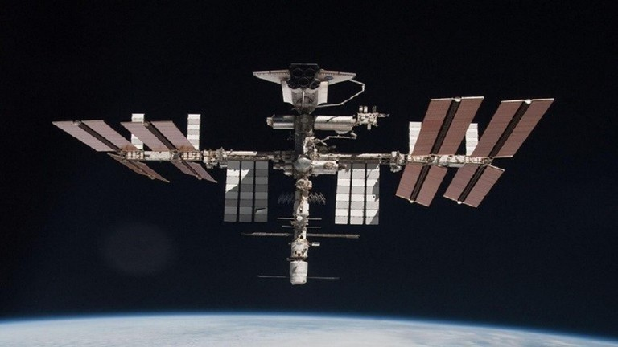
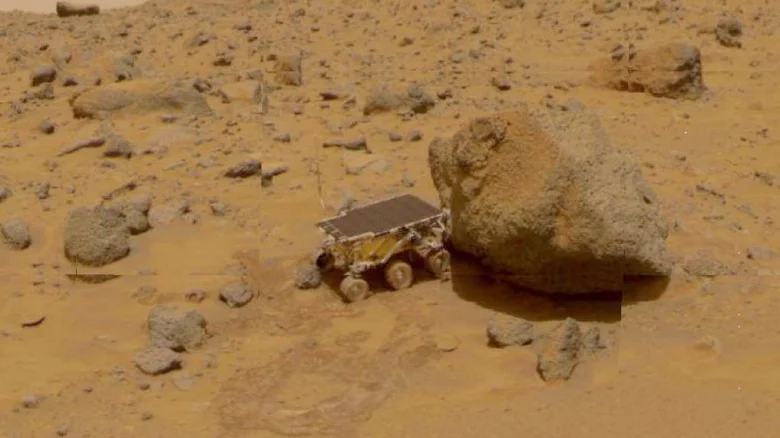
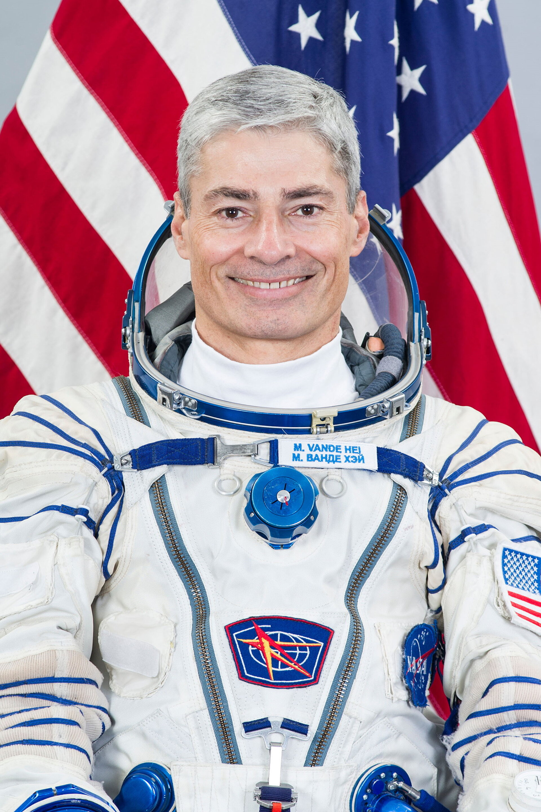
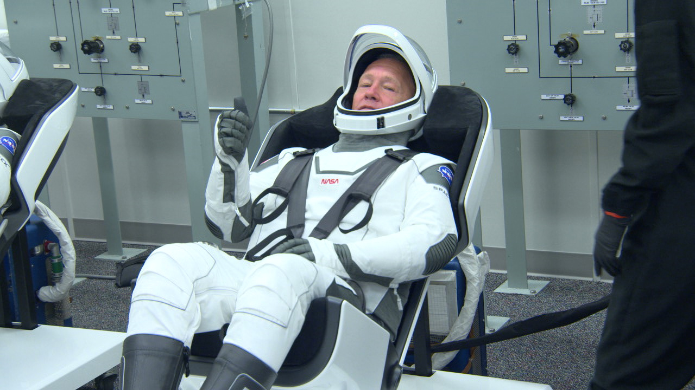
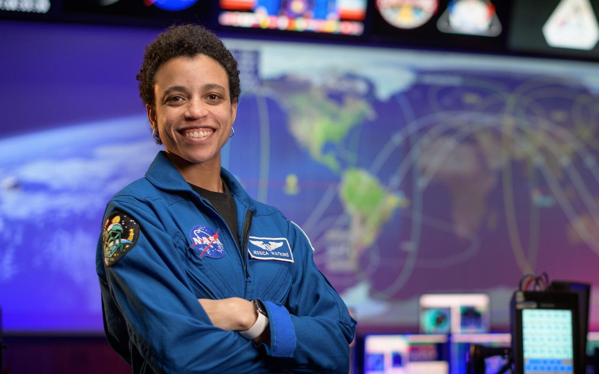
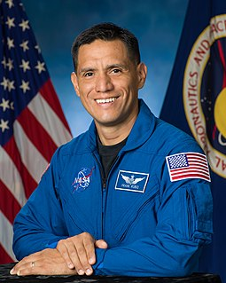
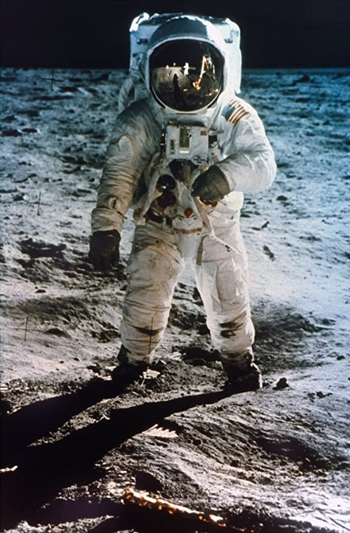
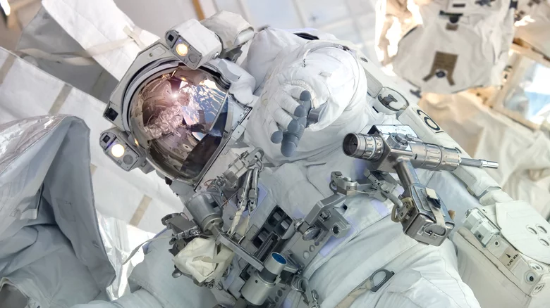
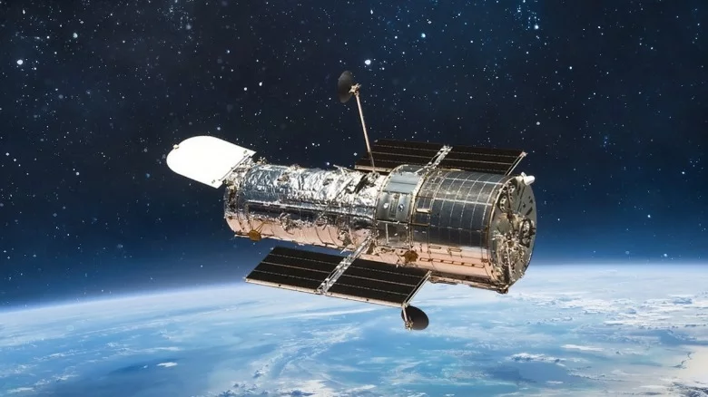
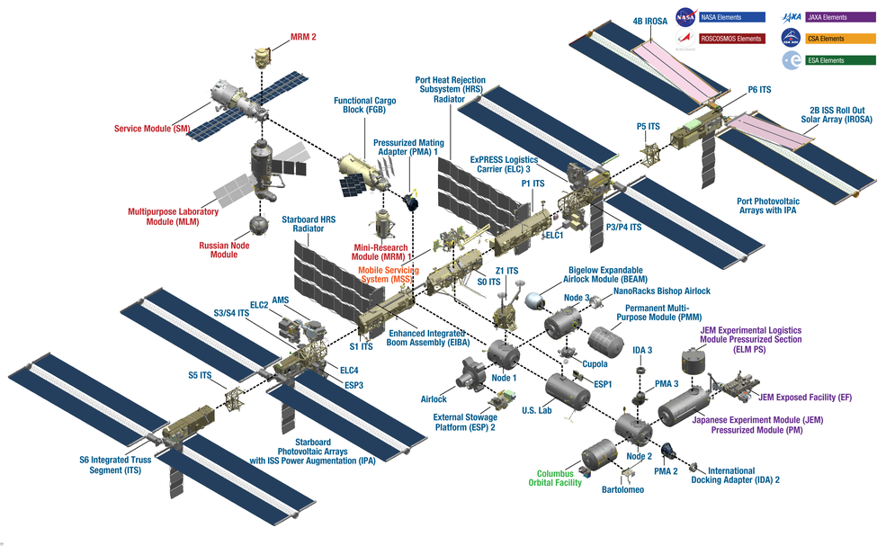

about international space station....
The International Space Station is a large spacecraft in orbit around Earth. It serves as a home where crews of astronauts and cosmonauts live . The space station is also a unique science laboratory. Several nations worked together to build and use the space station

Why Is the Space Station Important?
The space station has made it possible for people to have an ongoing presence in space. Human beings have been living in space every day since the first crew arrived. The space station's laboratories allow crew members to do research that could not be done anywhere else. This scientific research benefits people on Earth. Space research is even used in everyday life. The results are products called "spinoffs." Scientists also study what happens to the body when people live in microgravity for a long time. NASA and its partners have learned how to keep a spacecraft working well. All of these lessons will be important for future space exploration. NASA currently is working on a plan to explore other worlds. The space station is one of the first steps. NASA will use lessons learned on the space station to prepare for human missions that reach farther into space than ever before.
What does the International Space Station do?
The mission of the International Space Station is to enable long-term exploration of space and provide benefits to people on Earth. With six state-of-the-art laboratories, the Space Station will be the premiere research facility in space, four times larger and more capable than any previous space station.
Where is International Space Station?
The International Space Station (ISS) is a multi-nation laboratory, orbiting 248 miles (400 kilometers) above our heads
What is the path of the International Space Station?
The station travels from west to east on an orbital inclination of 51.6 degrees. Each orbit takes 90-93 minutes, depending on the exact altitude of the ISS. During that time, part of the Earth is viewed under darkness and part under daylight.
Mars Pathfinder
The first robotic rover to land on the surface of Mars, the Mars Pathfinder touched down on the surface of the Red Planet on July 4, 1997 (via NASA). Far outlasting its expected useful life, the Mars Pathfinder transmitted data to Earth until September 27, 1997, NASA also noted. Over that period, more than 2.3 billion bits of information were sent back to scientists on Earth, along with nearly 17,000 images
The first human to go into space....
Yuri Gagarin Yuri Gagarin from the Soviet Union was the first human in space. His vehicle, Vostok 1 circled Earth at a speed of 27,400 kilometers per hour with the flight lasting 108 minutes. Vostok's reentry was controlled by a computer.

Astronauts usually sleep by restraining their bodies in a small sleeping compartment or sleeping bag. In space, there's almost no gravity, so there's no distinction between up and down like on earth. Any surface can be a floor, wall, or ceiling, and therefore astronauts can sleep anywhere./
oday, astronauts eat a varied diet that is similar to what we eat on Earth. The menu aboard the International Space Station (ISS) includes more than a hundred items - from vegetables and fruit to pre-prepared meals and desserts. Even condiments such as ketchup and mustard are available.
Astronauts / International Space Station
Mark T. Vande Hei
Doug Hurley
Jessica Watkins
Francisco Rubio
Buzz Aldrin
Astronauts who work for civilian agencies like NASA earn a base salary of $104,898 per year. However, their salaries can increase to $161,141 per year. Furthermore, SpaceX founder Elon Musk said that he would be willing to pay his astronauts up to $500,000 for a trip to Mars
How much does the 2022 space suit cost?
By the time those two units are available, NASA will have likely spent more than $1 billion on the spacesuits, including the development and assembly costs, the audit found, putting each xEMU at a price tag of around $500 million.
astronauts have died in space....
in five separate incidents. Three of them had flown above the K�rm�n line (edge of space), and one was intended to do so. In each case, the entire crew was killed.
Do people live on the International Space Station?
The space station has been continuously occupied since November 2000. An international crew of seven people live and work while traveling at a speed of five miles per second, orbiting Earth about every 90 minutes. Sometimes more are aboard the station during a crew handover.
How many people are on the International Space Station?
seven people An international crew of seven people live and work while traveling at a speed of five miles per second, orbiting Earth about every 90 minutes. Sometimes more are aboard the station during a crew handover.
How long is 1 minute in space?
86,000 miles * 60 seconds = 11,160,000 miles/minute
International Space Station Size & Mass....
Pressurized Module Length: 218 feet along the major axis (67 meters) Truss Length: 310 feet (94 meters) Solar Array Length: 239 feet across both longitudinally aligned arrays (73 meters) Mass: 925,335 pounds (419,725 kilograms)
How cold is the space?
And how does the coldest place on Earth compare? Space is very, very cold. The baseline temperature of outer space is 2.7 kelvins (opens in new tab) � minus 454.81 degrees Fahrenheit, or minus 270.45 degrees Celsius � meaning it is barely above absolute zero, the point at which molecular motion stops.
How Old Is the Space Station?
The first piece of the International Space Station was launched in November 1998. A Russian rocket launched the Russian Zarya (zar EE uh) control module. About two weeks later, the space shuttle Endeavour met Zarya in orbit. The space shuttle was carrying the U.S. Unity node. The crew attached the Unity node to Zarya. More pieces were added over the next two years before the station was ready for people to live there. The first crew arrived on November 2, 2000. People have lived on the space station ever since. More pieces have been added over time. NASA and its partners from around the world completed construction of the space station in 2011.
Hubble Space Telescope
The ability to capture images far beyond what Earthly telescopes can achieve was recognized in 1990. On April 24th of that year, the Hubble Space Telescope was launched into orbit via the space shuttle Discovery. Orbiting the Earth at more than 300 miles above its surface, the Hubble has been transmitting images back to Earth for over 30 years now (via HubbleSite). Hubble has been able to show the people of Earth both the beauty and vastness of the worlds that exist beyond what our naked eye sees. Hayden Planetarium director Neil deGrasse Tyson quipped, "No matter what Hubble reveals � planets, dense star fields, colorful interstellar nebulae, deadly black holes, graceful colliding galaxies, the large-scale structure of the Universe � each image establishes your own private vista on the cosmos," (via Rocket Stem). Hubble is able to stay functional in part due to various servicing missions that keep the space telescope maintained and updated. The last servicing mission was carried out in 2009.
Which countries own International Space Station?
This means that the owners of the Space Station - the United States, Russia, the European Partner, Japan and Canada - are legally responsible for the respective elements they provide. The European States are being treated as one homogenous entity, called the European Partner on the Space Station.
Who controls space station?
The ISS is not owned by one single nation and is a "co-operative programme" between Europe, the United States, Russia, Canada and Japan, according to the European Space Agency (ESA).
Why is it called the ISS?
International Space Station (ISS), space station assembled in low Earth orbit largely by the United States and Russia, with assistance and components from a multinational consortium.
Why is NASA getting rid of the ISS?
Why is the ISS being retired? As the ISS enters its third decade, the spacecraft is beginning to show its age. Much of the equipment is outdated and structural problems such as cracks are beginning to emerge.
How fast is the ISS?
7.66 km/s
How long does the ISS have left?
As of 2022, the space station has been in orbit for an impressive 21 years. As NASA and its partners originally planned to decommission after 15 years, the space station is long past its original due date. Even with mounting safety concerns, NASA has decided to extend the lifespan of the space station until 2031.
What happens if the ISS crashes?
Whatever parts of the ISS survive crashing into the ocean will sink to the bottom and join the other 263 pieces of space debris that have crashed into that region in the Pacific Ocean since 1971. NASA has no plans to retrieve the remains of the ISS